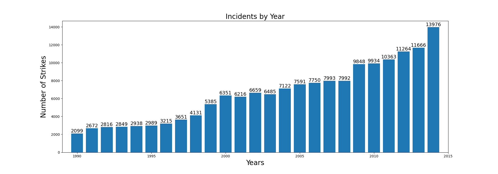
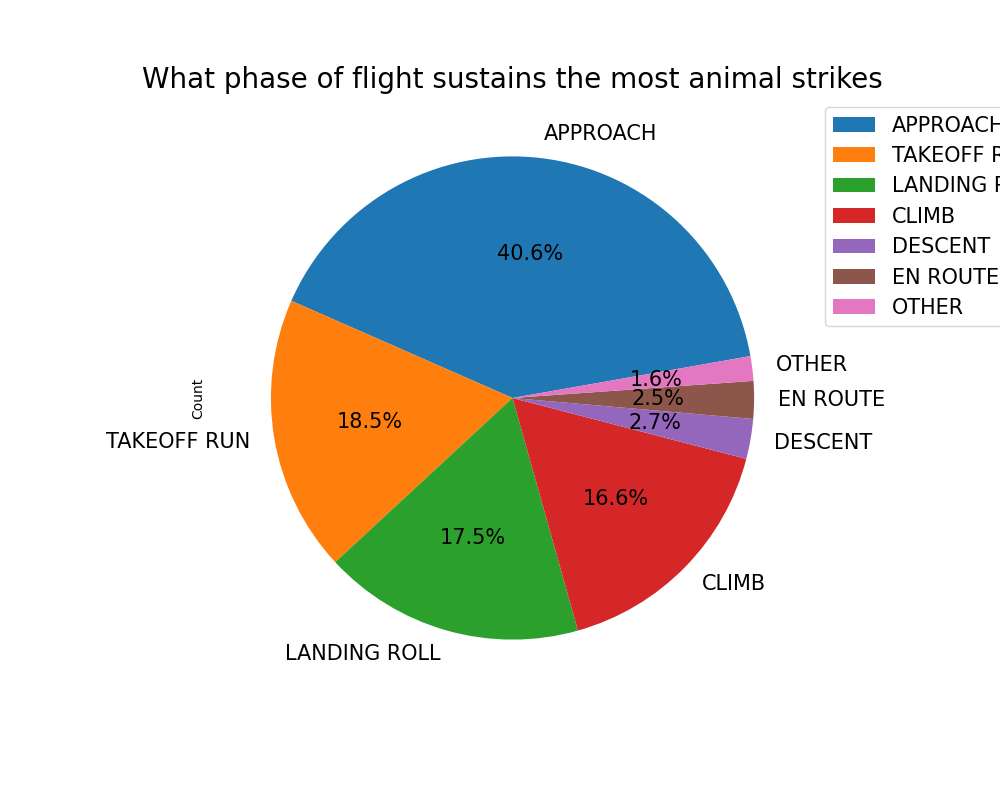
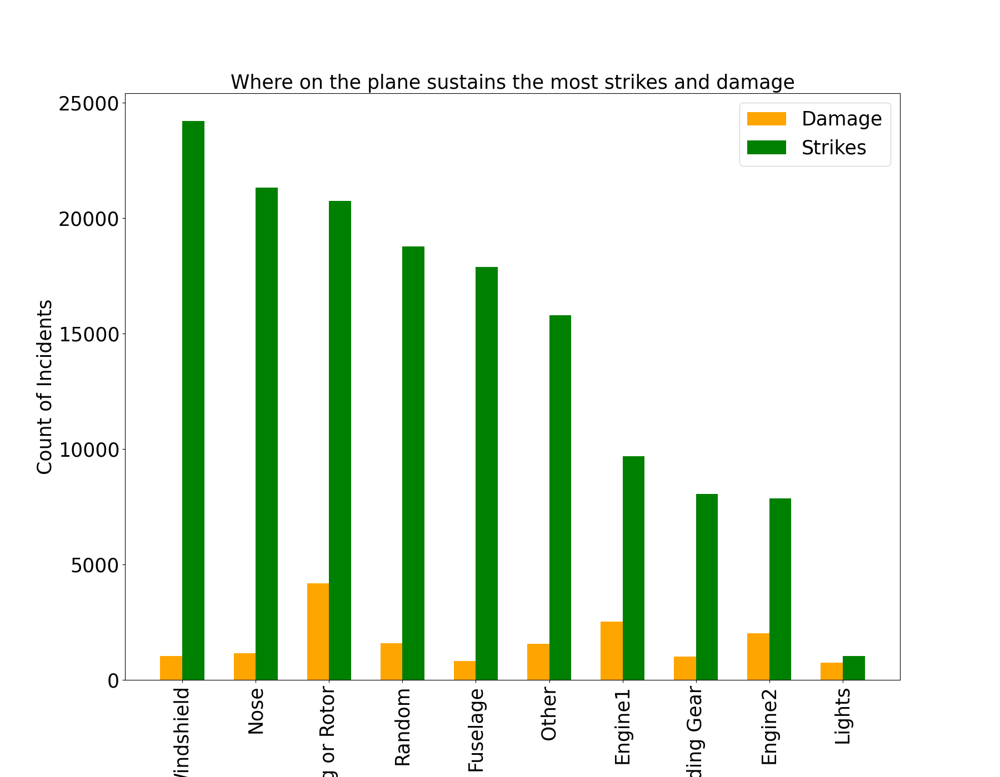

174,104
Total Strike Incidents
25
Years of Data (1990-2015)
96.9%
Bird Strikes
9.41%
Strikes Causing Damage
Full Analysis Reports
Part 1: Species, Seasons & Geography
Analyzing which birds are most dangerous, seasonal strike patterns, and geographic hotspots.
- Most dangerous bird species
- Monthly and seasonal patterns
- State and airport rankings
- Chi-square hypothesis testing
Part 2: Trends, Flight Phases & Damage
Examining temporal trends, flight phase risks, and aircraft damage patterns.
- Incident trends over time
- Flight phase strike distribution
- Injuries and fatalities analysis
- Aircraft damage location mapping
Key Findings




